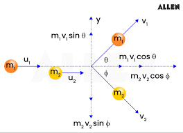

← Back to Concepts
Momentum Conservation Principle
What is Momentum Conservation?
Momentum conservation is a fundamental principle of physics stating that in an isolated system, the total momentum remains constant if no net external force acts on it. This principle is crucial in analyzing collisions, explosions, and any interactions involving moving bodies. In simple terms, this formula is:
\( m_1 v_{i1} + m_2 v_{i2} = m_1 v_{f1} + m_2 v_{f2} \)
This equation expresses the principle: \( p_i = p_f \) .
Even though momentum is conserved, it does not mean that kinetic energy is conserved. We will go more in depth on this later in this unit.
Why does no net external force imply conservation?
Newton's 2nd law states the rate of change of momentum equals the net external force:
\( \vec{F}_{\text{net}} = \frac{d\vec{p}}{dt} \)
If \( \vec{F}_{\text{net}} = 0 \), then \( \frac{d\vec{p}}{dt} = 0 \Rightarrow \vec{p} = \text{constant} \), or \( p_i = p_f \) .
This means total momentum does not change in time when no external forces act.
Vector Nature: Conservation in 1D and 2D
Since momentum is a vector, conservation applies independently to each component:
\[
p_{x,\text{initial}} = p_{x,\text{final}} \quad \text{and} \quad p_{y,\text{initial}} = p_{y,\text{final}}
\]
Again, this means \( p_i = p_f \) for each direction separately.
This is important for 2D collisions where vector decomposition is necessary.

Internal Forces Cancel (Newton's 3rd Law)
For any two interacting bodies inside the system (e.g. Tension force of a string in a 2-block system), internal forces come in action-reaction pairs:
\[
\vec{F}_{12} = -\vec{F}_{21}
\]
Internal forces cancel in the total system sum, so they do not change total momentum: \( \sum \vec{F}_{\text{internal}} = 0 \Rightarrow p_i = p_f \) .
Calculus Derivation of Momentum Conservation
The total momentum \( \vec{P} \) of a system of particles is:
\( \vec{P} = \sum_i m_i \vec{v}_i \)
Thus, total momentum changes only due to net external forces, confirming \( p_i = p_f \) if \( \vec{F}_{\text{net}} = 0 \).
Newton's second law for each particle: \( m_i \frac{d\vec{v}_i}{dt} = \vec{F}_{i,\text{external}} + \sum \vec{F}_{i,\text{internal}} \)
Summing over all particles and canceling internal forces yields:
\[
\frac{d\vec{P}}{dt} = \vec{F}_{\text{net external}}
\]
If \( \vec{F}_{\text{net external}} = 0 \), then \( \frac{d\vec{P}}{dt} = 0 \), so \( \vec{P} \) is constant, i.e., \( p_i = p_f \) .
Example: 1D Collision of Two Objects
Two objects with masses \( m_1, m_2 \) and initial velocities \( v_{1i}, v_{2i} \) collide in one dimension.
Since no external force acts, total momentum before and after satisfies:
\[
m_1 v_{1i} + m_2 v_{2i} = m_1 v_{1f} + m_2 v_{2f}
\]
This equation reflects \( p_i = p_f \) in 1D.
Example: 2D Collision with Momentum Conservation
In two dimensions, apply conservation separately for each component:
\[
m_1 v_{1i,x} + m_2 v_{2i,x} = m_1 v_{1f,x} + m_2 v_{2f,x}
\]
\[
m_1 v_{1i,y} + m_2 v_{2i,y} = m_1 v_{1f,y} + m_2 v_{2f,y}
\]
Both equations uphold the vector form of \( p_i = p_f \) .
Common Misconceptions
Momentum is always conserved: Only true if the system is isolated (no external forces).Internal forces change total momentum: Internal forces always cancel and do not change total momentum.Momentum is scalar: Momentum is a vector; direction matters.
Watch this video for a better understanding of momentum conservation:
VIDEO
Summary Table
Concept
Explanation
Mathematical Expression
No Net External Force
Total momentum remains constant
\( p_i = p_f \)
Momentum Conservation
Initial total momentum = final total momentum
\( p_i = p_f \)
Vector Components
Conservation applies separately in each direction
\( p_{i,x} = p_{f,x}, \quad p_{i,y} = p_{f,y} \)
Internal Forces
Cancel out and don't affect total momentum
\( \sum \vec{F}_{\text{internal}} = 0 \)
Use this principle to solve a wide variety of collision and explosion problems in AP Physics C.
2D Ball Collision Simulation
Start Simulation
Reset
Blue ball momentum = (0, 0), magnitude = 0
Red ball momentum = (0, 0), magnitude = 0
Total system momentum = (0, 0), magnitude = 0